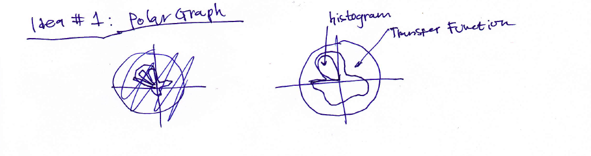
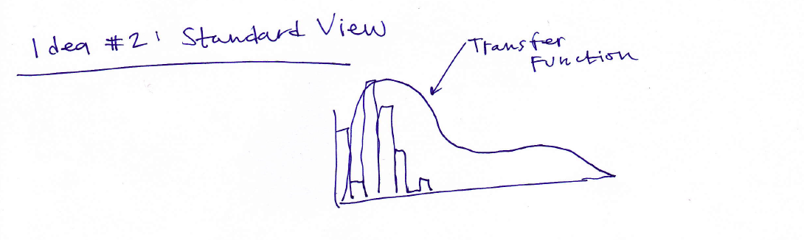
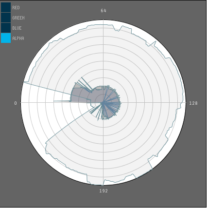
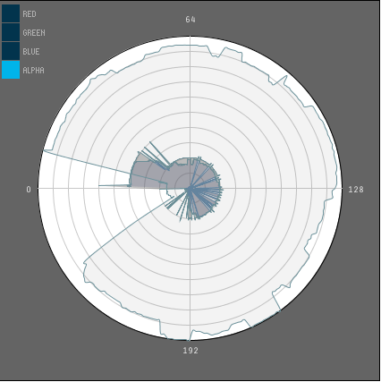

Idea #1
For this first idea I was really trying to conceptually get as far away from the standard 1-d transfer function as I could. With this approach the transfer function is seen as area on a polar graph rather than as an area under a curve. For me this visualization just made more sense because, when you get into this context, values of RGBA you give each at each scalar data value can be viewed as boundary of some circular area. With this approach the user will be able to edit the transfer functions of each color/opacity (RGBA) by dragging the mouse around the circle much as with the linear layout. The widget would be scented with a histogram for reference. The user would be able to select as many of the color channels as they wished. The areas enclosed by each of the transfer functions would be quite transparent so that the user could see the interaction of each of the color channels.
Idea #2
This sketch is basically what we have from seen from the the ImageVis3D tool. It would allow the user to drag along the widget to set edit each of the transfer functions. The one idea that I had to make this a better editor is below.
Idea #3

This idea is really just an augmentation of the idea I had above. This widget would have a linked view below that would allow the user to zoom in on certain subsegments of the editor. This would allow for more detailed editing of the transfer function.
Why I Chose It
Ultimately I settled on the polar graph idea. This was as much of an experimental choice as anything. I really just wanted to see if it would work and how it would come together. Additionally, as I learned more and more about transfer functions I would think of them in this circular way. It made more sense to me to think of these transfer functions in terms of regions instead of lines. I also found that editing the transfer functions seemed to be easier using this method.
Advantages/Disadvantages
One of the advantages of this design is that the transparency of the different regions allows the user to see the interaction of the different color channels and the histogram. Another advantage is the ease of editing each transfer function, as you are just dragging the mouse around the circle. Additionally, I think this design is more appealing than the standard linear design.
The biggest disadvantage to this design is that the user really has to change how they view transfer functions from spanning across the x-axis to wrapping around a polar graph. This represents a complete shift away from the way these functions are viewed.
Polar Coordinate System
In implementing this system I had to refresh myself on the polar coordinate system and convert from the Cartesian system to the polar system so that Processing could take my mouseX and mouseY coordinates and map them to the polar graph. For this I used the definitions
Histogram Scenting
In order to generate the histogram I wrote a calcHist() function. Here is the code:
public void calcHist(){
// generate histogram data
for (int x = 0; x < gridSize; x++){
for (int y = 0; y < gridSize; y++){
for (int z = 0; z < gridSize; z++){
int bright = data[x][y][z];
hist[bright]++;
}
}
}
m = -Float.MAX_VALUE;
// put into log scale
for (int x = 0; x < hist.length; x++){
if (hist[x] == 0){
hist[x] = 0;
} else {
hist[x] = floor(log(hist[x])/log(10));
}
}
// find largest value in the histogram
for (int x = 0; x < gridSize; x++){
if (m < hist[x])
m = hist[x];
}
}
For most of the data sets the histograms were nearly worthless because there were a few values that were so high that they rendered the rest of the values unreadable. To solve this I decided to put all of my histogram values in log scale. See the difference below.
This scale on the histogram allows the user to more easily view the histogram in a context where they can get the most information.
ControlP5 Checkbox
Using the JavaDocs for ControlP5 I was able to gain a little insight in to how to create the checkboxes I used for my controls on my widget. I ended creating the checkboxes with the addCheckBox() method and wrote a controlEvent() method to make the buttons work.Dataset 1: Foot
An interesting thing about this data set for me was that as I looked into saturating the whole of the circle with alpha it was interesting to see the foot emerge. I like using the different colors to identify different parts of the foot. it was pretty difficult to get clean images of the foot with out getting a lot of the background noise.
Dataset 2: Fuel
 

I think that this became one of my favorite datasets. I really liked trying to get the fuel drop to stand out and to use the colors to be able to see the different layers of the fuel drop.
My Design
As far as strengths of my design I addressed those above. To reiterate, I think that this helps the user see transfer functions in a different way as more of a region and not a function on the cartesian graph. This helped when layering the colors because I could more easily keep the colors separate. As far as weaknesses, it is quite difficult to see the functions that we are used on a polar system. This can lead to mistakes being made. Personally, I really like this design, but I don't know if it is for everyone.In order to make this design more effective, I would like to add some tools to this widget. One tool I could add is the ability to broaden or narrow the stroke of your cursor on the functions. Another tool would be the ability to decrease the radii of all of the transfer functions uniformly for quick erasing. Other than that the ability to have a transition from polar to cartesian and vice versa to accomodate different types of users.
As far as Volume Rendering is concerned, I feel the pros are that it gives you so many different ways to view a data set. You can let the insides of whatever it is that you are looking at emerge for examination or focus only on the outside. The only con that I can think of is that it might be difficult for people to perform on computers that I don't have the most up to date resources. I guess another challenge is that in order to understand these volume renderings the users have to understand how to look at them. Being first educated on what you are looking at is definitely a barrier to understanding these renderings.